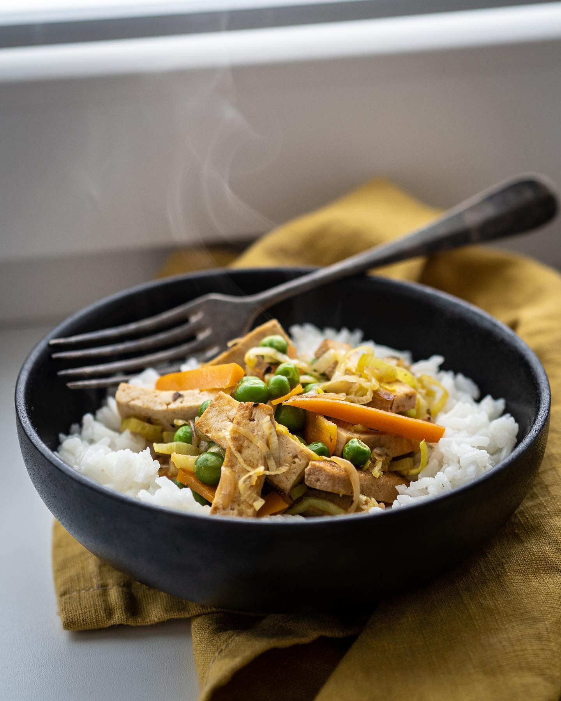

Tofu so zeleninou podľa @ela_kridlova — Normy Jedál
Mám jednu kamošku. Volajme ju Vierka. Máme veľa spoločného, ale jedno nás rozdeľuje. Vierka nemá rada tofu. Keď som jej naposledy písala, že máme na večeru tofu, dostala záchvat smiechu. Potom sa zhrozila, že tofu by teda nikdy nezjedla.
A ja som si povedala, že príde čas, keď aj Vierka ochutná tofu. Žiaľ, nemôžem Vierku pozvať na večeru. A tak som dostala nápad.
Pripravila som nový recept, ktorý si Vierka môže pripraviť z pohodlia domova a ešte sa aj dobre navečeria.
Pripravila som recept na tofu. 😈
.
Ak ste doteraz tiež obchádzali tofu kilometrovou vzdialenosťou, dajte mu kvôli mne šancu. Myslím, že vám môj rýchly recept zachutí. A ja vám potom dám vedieť, či chutilo Vierke 😉
.
#novyrecept #zosrdcadohrnca #dnesjem #tofusozeleninou #rychlejedlo #foodblogger #foodblogfeed #foodstagram #foodstyling #foodphotography #foodoftheday #recipeoftheday #vegetarianfood #eatcaptureshare #linenhome #abreadbag #foodfluffer @foodfluffer #getminimal